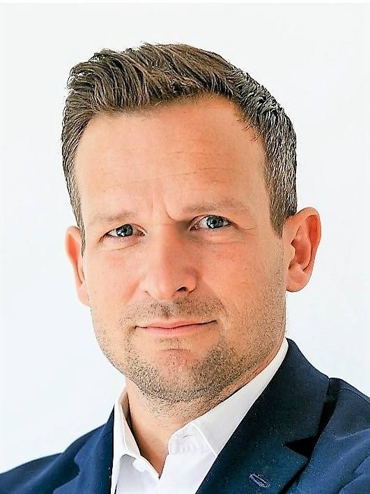

Einkauf, Supply Chain und Qualität für Schienenfahrzeuge
Ich arbeite für Unternehmen, Wagenhalter, Werkstätten, Hersteller und Zertifizierungsstellen im technischen Einkauf, Supply Chain Management, Qualitäts- und Projektmanagement und als Auditor. Seit 2017 freiberuflich in ganz Europa.
Wobei ich Sie unterstütze
Zehn Jahre lang habe ich im Einkauf rund um Güterwagen gearbeitet, fünf davon als Leiter. Daraus sind vier Arbeitsfelder geworden, die im Alltag eng zusammenhängen.
Technischer Einkauf
- Ausschreibung und Vergabe von Ersatzteilen und Instandhaltungsleistungen
- Einkauf für Neubau und Umbau von Güterwagen
- Preis- und Vertragsverhandlungen
Supply Chain Management
- Neue Lieferanten suchen, bewerten und freigeben, auch in Osteuropa und Asien
- Bestehende Lieferanten weiterentwickeln
- Lieferantennetzwerke aufbauen, damit Teile verfügbar bleiben
Qualitäts- und Projektmanagement
- Prozesse aufnehmen und Fehlerquellen finden (Six Sigma Green Belt)
- Vorbereitung auf ECM- und ISO-Zertifizierungen
- Projektleitung und -planung (MS Project)
Audits
- Lieferanten- und Werkstattaudits vor Ort
- Interne Audits vor der Zertifizierung
- Zertifizierungsaudits nach ECM, EN 15085-2 und ISO
Nach diesen Regelwerken auditiere ich
Im Auftrag von Zertifizierungsstellen oder direkt für Ihr Unternehmen, als internes Audit oder bei Ihren Lieferanten vor Ort.
ECM
Zertifizierung der für die Instandhaltung zuständigen Stelle (Entity in Charge of Maintenance) für Güterwagen und andere Eisenbahnfahrzeuge, einschließlich der Instandhaltungsfunktionen.
EN 15085-2
Schweißen von Schienenfahrzeugen und -fahrzeugteilen: Anforderungen an den Schweißbetrieb und dessen Zertifizierung.
ISO 9001:2015
Qualitätsmanagement
ISO 14001:2015
Umweltmanagement
ISO 45001:2018
Arbeits- und Gesundheitsschutz
Internes Audit
Sie wollen wissen, wo Ihr Betrieb vor der Zertifizierung steht.
Lieferantenaudit
Ich prüfe Ihre Lieferanten und Instandhaltungswerkstätten vor Ort.
Zertifizierungsaudit
Im Auftrag einer Zertifizierungsstelle.
Ingenieur, Einkäufer, Auditor
Ich bin Diplom-Ingenieur für Maschinenbau und komme aus dem technischen Einkauf. Meine ersten Stationen waren ein Automobilzulieferer in Rostock und anschließend ein großer Vermieter von Schienenfahrzeugen in Hamburg.
Dort habe ich ab 2012 den technischen Einkauf geleitet: Material und Instandhaltung für rund 50.000 Schienenfahrzeuge, dazu Neu- und Umbauten. Ich habe viele Werkstätten und Lieferanten in ganz Europa von innen gesehen. Seit 2017 arbeite ich freiberuflich und bringe diese Erfahrung in Einkaufsprojekte, in die Lieferantenentwicklung und in Audits ein.

- seit 05/2017Freiberuflicher Ingenieur, Berater und Auditoreuropaweit
- 2012 – 2017Leiter Technischer EinkaufVermietung von Schienenfahrzeugen, Hamburg
- 2010 – 2011Technischer EinkäuferVermietung von Schienenfahrzeugen, Hamburg
- 2008 – 2009Technischer EinkäuferAutomobilzulieferer, Rostock
- 2006 – 2008Studium Maschinenbau, DiplomHAW Hamburg
Worum geht es bei Ihnen?
Schreiben Sie mir kurz, worum es geht, wo und bis wann. Ich melde mich mit einem Terminvorschlag.